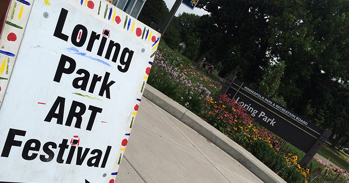

Edina Art Fesstival
The 51st Annual Edina Art Fair is from June 2-4, 2017. The Edina Art Fair has grown to 200,000 visitors throughout the 3-day weekend, while displaying 300 artists diverse collection of art, entertainment, kids zone, craft beer garden in the Edina 5-0 Food Court, and a new beer garden on Drew Avenue.
Friday, June 1 - Sunday, June 3, 2018
10 a.m. to 7 p.m - Friday and Saturday 10 a.m. to 5 p.m - Sunday
Free Admission | Free Shuttle
St. Anthony Art Fesstival
The Saint Anthony Park Arts Festival brings together artists, musicians, art lovers, families and a supportive community. Set in a charming neighborhood of St. Paul, the arts festival is a one day celebration of both art and a historic Carnegie branch library. Now in its 49th year, the festival continues to attract high quality artists from across the region.
Saturday, June 2, 2018
10 a.m. to 5 p.m
Free Admission |
Eagan Art Fesstival
The Theme for the 23rd Eagan Art Festival is Imagination. How do artists, musicians, and writers come up with their ideas? What is the process to get from concept through creation to a final finished piece? All humans have the gift of imagination and it is the cornerstone of all things new, from new products, to new applications, to new artwork – Imagination plays a part.
Saturday, June 24 - Sunday, June 25, 2018
9 a.m. to 5 p.m - Saturday and 10 a.m. to 5 p.m - Sunday
Free Admission |
Uptown Art Fesstival
55th Annual Uptown Art Fair, featuring over 350 artists, fine food and beverages from over 20 vendors, family activities, an outdoor performance stage, outdoor wine and beer gardens, a youth art fair and culinary arts competition.
Friday August 3 - Sunday, August 5, 2018
Unknown
Free Admission |

Stone Bridge Art Fesstival
24th Annual Stone Arch Bridge Art Fair.
Friday June 15 - Sunday, June 17, 2018
5 p.m. to 10 p.m - Friday, 10 a.m. to 7 p.m - Saturday and 10 a.m. to 5 p.m - Sunday
Free Admission |

Loring Art Fesstival
Since 2000, Loring Park Art Festival has combined creative expression and community connectedness to surprise and delight all who attend. With beautiful ponds and formal gardens, Loring Park makes an idyllic spot to celebrate art, music, food and friends for two days each summer in downtown Minneapolis.
The event features 140 visual artists selling original work, with something for everyone. Visitors will encounter strolling musicians, scheduled stage performances, engaging children's activities and adventurous culinary options.
Saturday July 28 - Sunday, July 29, 2018
10 a.m. to 6 p.m - Saturday and 10 a.m. to 5 p.m - Sunday
Free Admission |
